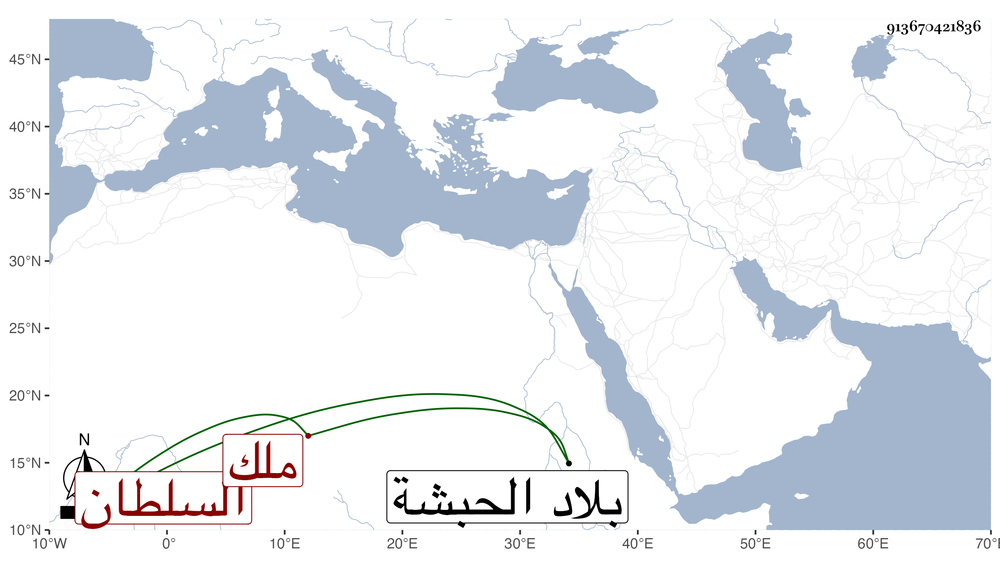

0902Sakhawi.DawLamic.ITO20230111-ara1.EIS1600.913670421836
Biography ID: 913670421836
873
إسحاق بن داود بن سيف أرغد ملك الحبشة وصار بحر الملقب الحطي ومعناه السلطان هلك أبوه في سنة اثنتي عشرة كما سيأتي بعد أن طالت مدته فأقيم بعده ابن له اسمه تدروس فهلك سريعا فأقيم بعده هذا فطالت مدته وفخم أمره وهلك في سنة ثلاث وثلاثين فاستقر بعده ابنه اندراس ثم عمه حرنباي بن داود ثم سلمون بن إسحاق ولم تطل مددهم بل كانوا في سنة واحدة وفتح الله عليه بتزايد جيش جمال الدين بن سعد الدين محمد وتأييده عليهم وفتحه المتوالي لبلادهم . ذكره شيخنا في أنبائه باختصار والمقريزي في عقوده مطولا .
